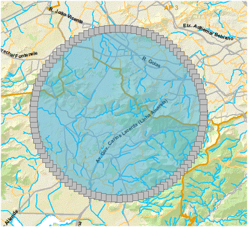
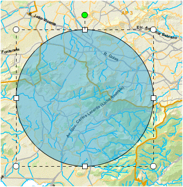

Editar Feições
Permite editar feições desenhadas no mapa.
Passos para editar pontos de feição:

1 - Clicar uma vez sobre o símbolo desenhado;
2 - Editar os pontos da forma desejada;
3 - Clicar sobre o mapa para finalizar edição;
Passos para editar posição e tamanho de feição:

1 - Clicar uma vez sobre o símbolo desenhado e aguardar opção de editar pontos ser exibida;
2 - Clicar novamente sobre o símbolo desenhado;
3 - Clicar sobre alguma extremidade e arrastar para manipular o tamanho;
4 - Clicar sobre o símbolo verde e move-lo para rotacionar.